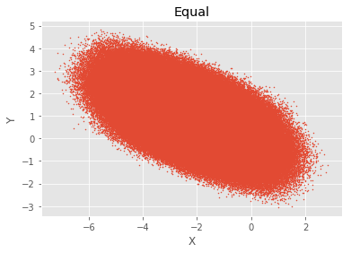
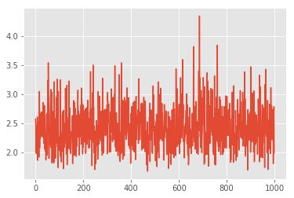
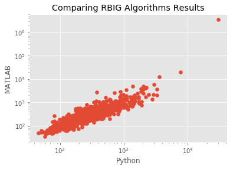
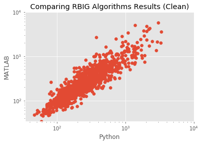
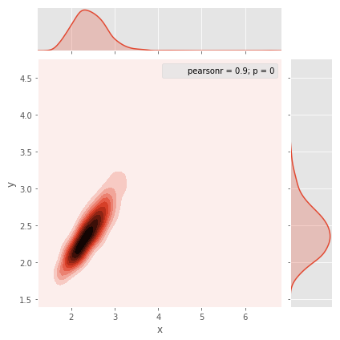
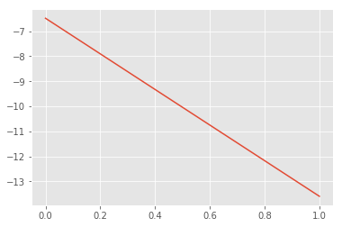
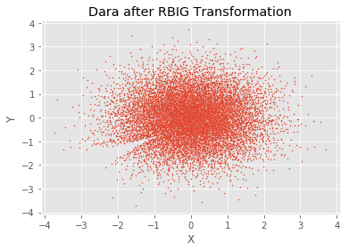
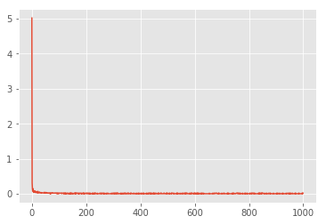

RBIG Demo¶
%matplotlib inline
import sys
sys.path.insert(0, '/home/emmanuel/code/py_packages/rbig/src')
sys.path.insert(0, '/home/emmanuel/code/rbig/')
# sys.path.insert(0, '/home/emmanuel/Drives/megatron/temp/2017_RBIG/')
# sys.path.insert(0, '/Users/eman/Documents/code_projects/rbig/')
import numpy as np
# import seaborn as sns
import pandas as pd
import warnings
from time import time
from rbig.rbig import RBIG
from sklearn.model_selection import train_test_split
from sklearn.utils import check_random_state
from scipy import io
import matplotlib.pyplot as plt
plt.style.use('ggplot')
warnings.filterwarnings('ignore') # get rid of annoying warnings
%load_ext autoreload
%autoreload 2
Toy Data¶
seed = 123
rng = np.random.RandomState(seed=seed)
aux2 = io.loadmat('/media/disk/erc/papers/2018_RBIG_IT_measures/2018_RBIG_IT_measures/2018_RBIG/DATA/DATA_uniform_dim_10_seed_2.mat')
seed = 123
rng = np.random.RandomState(seed=seed)
aux2 = io.loadmat('/media/disk/erc/papers/2018_RBIG_IT_measures/2018_RBIG_IT_measures/2018_RBIG/DATA/DATA_uniform_dim_10_seed_2.mat')
# aux2 = io.loadmat('/home/emmanuel/Drives/megatron/temp/2017_RBIG/DATA_uniform_dim_10_seed_2.mat')
data = aux2['dat'].T
data_original = aux2['aux'].T
R = aux2['R'].T
# num_samples = 10000
# x = np.abs(2 * rng.randn(1, num_samples))
# y = np.sin(x) + 0.25 * rng.randn(1, num_samples)
# data = np.vstack((x, y)).T
fig, ax = plt.subplots()
ax.scatter(data[:, 0], data[:, 1], s=1)
ax.set_xlabel('X')
ax.set_ylabel('Y')
ax.set_title('Equal')
plt.show()

data_aux = np.dot(data_original, R)
RBIG Fitting¶
%%time
n_layers = 5
rotation_type = 'PCA'
random_state = 123
pdf_extension = 0.1
pdf_resolution = 1000
# Initialize RBIG class
rbig_model = RBIG(n_layers=n_layers, rotation_type=rotation_type, random_state=random_state,
pdf_extension=0.1, pdf_resolution=100)
# fit model to the data
rbig_model.fit(data);
CPU times: user 2min 38s, sys: 1.85 s, total: 2min 40s
Wall time: 17.2 s
ndet = 1000
jacobian = rbig_model.jacobian(data[:ndet, :])
print(jacobian.shape)
dd = np.zeros(ndet)
for i in range(ndet):
aux = jacobian[i, ...].squeeze()
dd[i] = np.abs(np.linalg.det(aux))
fig, ax = plt.subplots()
ax.plot(np.log10(dd))
plt.show()
fig_loc = '/home/emmanuel/projects/2019_rbig_info/reports/figures/rbig/'
save_name = 'test_rbig_py.png'
fig.savefig(fig_loc + save_name)
(1000, 10, 10)

Checking Versus MATLAB Results¶
# load data
matlab_results = io.loadmat('/Users/eman/Documents/MATLAB/rbig_2018/test_results_matlab.mat')['dd'].squeeze()
py_results = dd
---------------------------------------------------------------------------
FileNotFoundError Traceback (most recent call last)
~/.conda/envs/rbig_info/lib/python3.7/site-packages/scipy/io/matlab/mio.py in _open_file(file_like, appendmat)
30 try:
---> 31 return open(file_like, 'rb'), True
32 except IOError:
FileNotFoundError: [Errno 2] No such file or directory: '/media/disk/erc/papers/2018_RBIG_IT_measures/2018_RBIG_IT_measures/2018_RBIG/DATA/test_results_matlab.mat'
During handling of the above exception, another exception occurred:
FileNotFoundError Traceback (most recent call last)
<ipython-input-11-53a75f37242e> in <module>
1 # load data
----> 2 matlab_results = io.loadmat('/media/disk/erc/papers/2018_RBIG_IT_measures/2018_RBIG_IT_measures/2018_RBIG/DATA/test_results_matlab.mat')['dd'].squeeze()
3 py_results = dd
~/.conda/envs/rbig_info/lib/python3.7/site-packages/scipy/io/matlab/mio.py in loadmat(file_name, mdict, appendmat, **kwargs)
205 """
206 variable_names = kwargs.pop('variable_names', None)
--> 207 MR, file_opened = mat_reader_factory(file_name, appendmat, **kwargs)
208 matfile_dict = MR.get_variables(variable_names)
209 if mdict is not None:
~/.conda/envs/rbig_info/lib/python3.7/site-packages/scipy/io/matlab/mio.py in mat_reader_factory(file_name, appendmat, **kwargs)
60
61 """
---> 62 byte_stream, file_opened = _open_file(file_name, appendmat)
63 mjv, mnv = get_matfile_version(byte_stream)
64 if mjv == 0:
~/.conda/envs/rbig_info/lib/python3.7/site-packages/scipy/io/matlab/mio.py in _open_file(file_like, appendmat)
35 if appendmat and not file_like.endswith('.mat'):
36 file_like += '.mat'
---> 37 return open(file_like, 'rb'), True
38 else:
39 raise IOError('Reader needs file name or open file-like object')
FileNotFoundError: [Errno 2] No such file or directory: '/media/disk/erc/papers/2018_RBIG_IT_measures/2018_RBIG_IT_measures/2018_RBIG/DATA/test_results_matlab.mat'
x_min = np.minimum(matlab_results.min(), py_results.min())
x_max = np.maximum(matlab_results.max(), py_results.max())
print(py_results.shape, matlab_results.shape)
fig, ax = plt.subplots()
ax.scatter(py_results, matlab_results)
ax.set_yscale('log')
ax.set_xscale('log')
ax.set_title('Comparing RBIG Algorithms Results')
ax.set_xlabel('Python')
ax.set_ylabel('MATLAB')
plt.show()
fig_loc = '/Users/eman/Desktop/'
save_name = 'test_mat_v_py.png'
fig.savefig(fig_loc + save_name)
fig, ax = plt.subplots()
ax.scatter(py_results, matlab_results)
ax.set_yscale('log')
ax.set_xscale('log')
ax.set_xlim([x_min, 10**4])
ax.set_ylim([x_min, 10**4])
ax.set_title('Comparing RBIG Algorithms Results (Clean)')
ax.set_xlabel('Python')
ax.set_ylabel('MATLAB')
plt.show()
fig_loc = '/Users/eman/Desktop/'
save_name = 'test_mat_v_py_clean.png'
fig.savefig(fig_loc + save_name)
(1000,) (1000,)


data = pd.DataFrame({
'x': matlab_results,
'y': py_results})
sns_plot = sns.jointplot(x="x", y="y", data=np.log10(data), kind="kde")
fig_loc = '/Users/eman/Desktop/'
save_name = 'test_mat_v_py_jointplot.png'
sns_plot.savefig(fig_loc + save_name)
# ax = g.ax_joint
# ax.set_xscale('log')
# ax.set_yscale('log')

jacobian, data_transform2 = rbig_model.jacobian(data[:1000, :])
ndet = 1000
# dd = np.zeros(jacobian.shape[1])
for i in range(jacobian.shape[1]):
dd[i] = np.linalg.det(jacobian[i, :, :])
# fig, ax = plt.subplots()
# ax.plot(dd)
# plt.show()

Transform Data into Gaussian¶
# transform data
data_trans = rbig_model.transform(data)
fig, ax = plt.subplots()
ax.scatter(data_trans[:, 0], data_trans[:, 1], s=1)
ax.set_xlabel('X')
ax.set_ylabel('Y')
ax.set_title('Dara after RBIG Transformation')
plt.show()

BUCLE¶
%%time
n_layers = 1000
rotation_type = 'PCA'
random_state = 123
pdf_extension = 0.1
pdf_resolution = 1000
n_samples = 10000
R = np.array([[10, 0.5, 1, 7], [50, -3, 5, -5], [2, -3, 5, 4], [-2, -3, 5, 4]])
MIS = np.zeros(100)
for i in range(100):
aux = np.random.rand(n_samples, 4)
dat = np.dot(aux, R)
rbig_model = RBIG(n_layers=n_layers, rotation_type=rotation_type, pdf_extension=pdf_extension,
pdf_resolution=pdf_resolution)
g_data = rbig_model.fit(dat).transform(dat)
di = rbig_model.residual_info
MIS[i] = sum(di)
print(i)
# # Initialize RBIG class
# rbig_model = RBIG(n_layers=n_layers, rotation_type=rotation_type, random_state=random_state,
# pdf_extension=0.1, pdf_resolution=100)
# # fit model to the data
# rbig_model.fit(data);
0
1
2
3
4
5
6
7
8
9
10
11
12
13
14
15
16
17
18
19
20
21
22
23
24
25
26
---------------------------------------------------------------------------
KeyboardInterrupt Traceback (most recent call last)
<timed exec> in <module>()
~/code/py_packages/rbig/src/rbig.py in transform(self, data)
177 # marginal gaussianization
178 data_layer[idim, :] = norm.ppf(
--> 179 data_layer[idim, :]
180 )
181
~/anaconda3/envs/sci_py36/lib/python3.6/site-packages/scipy/stats/_distn_infrastructure.py in ppf(self, q, *args, **kwds)
1904 cond1 = (0 < q) & (q < 1)
1905 cond2 = cond0 & (q == 0)
-> 1906 cond3 = cond0 & (q == 1)
1907 cond = cond0 & cond1
1908 output = valarray(shape(cond), value=self.badvalue)
KeyboardInterrupt:
fig, ax = plt.subplots()
ax.plot(di)
ax.show()
---------------------------------------------------------------------------
AttributeError Traceback (most recent call last)
<ipython-input-24-3df48be58a99> in <module>()
2
3 ax.plot(di)
----> 4 ax.show()
AttributeError: 'AxesSubplot' object has no attribute 'show'

fig, ax = plt.subplots()
ax.plot(di)
ax.show(MIS)
---------------------------------------------------------------------------
AttributeError Traceback (most recent call last)
<ipython-input-25-1a669b5b5aa5> in <module>()
2
3 ax.plot(di)
----> 4 ax.show(MIS)
AttributeError: 'AxesSubplot' object has no attribute 'show'

print(MIS.mean(), MIS.std())